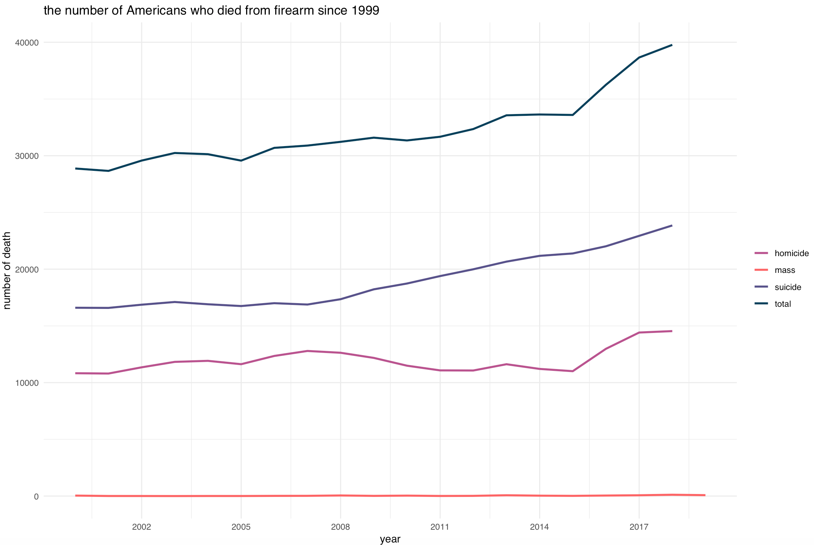
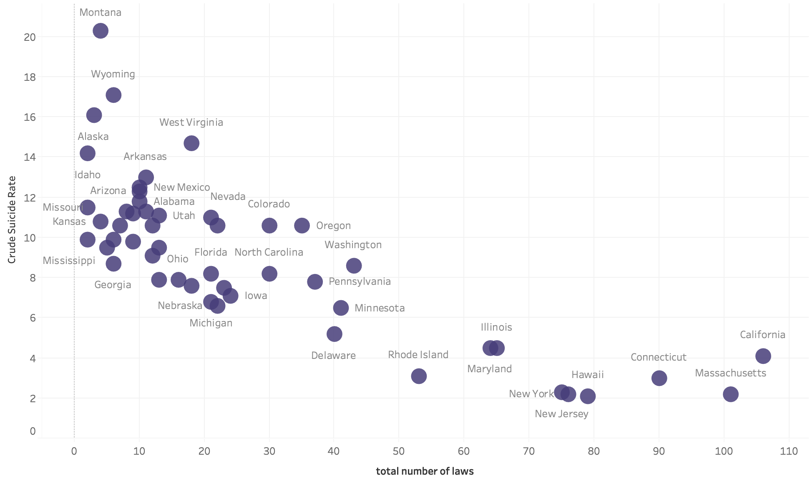
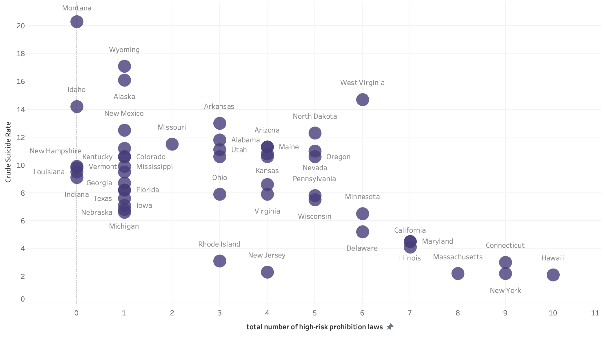

Last year we witnessed two devastating realities in the United States: 47,173 Americans had killed themselves; the firearm death rate hit a 20-year high after 39,773 people died from guns. Behind the two tragic numbers, we may realize that firearm suicide, the grey area that often lacks press attention, accounts for a substantial proportion of the violence epidemic.
While firearms are used in less than 10 percent of suicidal attempts, almost half of the suicides attribute to them in 2017, according to the Center for Disease Control and Prevention. However astounding, the total suicides with guns has been historically higher than homicides, accounting for about two thirds of total firearm deaths.
While the historical trend in firearm homicide was volatile, we observe a steady rate of increase in firearm suicides. In comparison, deaths from mass shooting is almost negligible.
Within the spiking trend, different states don’t experience the symptoms of this epidemic equally.

Texas and California lead the firearm suicide counts in 2017 with 2,158 and 1,610 respectively. However, if we compare the population-adjusted crude rate, the density map will tell a different story - Montana and West Virginia are leading the rates after the adjustments. While variations occurred in 2010 and 2000, we also see that Montana, Wyoming and West Virginia had high crude rates among the states.
How does gun laws fit in?
People across the states have been rallied together behind gun laws to address the gun violence epidemic. However, though hundreds of policy makers and researchers have studied on the effects of specific gun laws, it might still be hasty to conclude if certain legislations have reductive or prohibitive impact on gun violence controls, not to mention firearm suicides with fewer public records.
Despite the difficulties in causal analysis, people interested in policy impacts can still infer certain relationships between gun laws and suicide rates among states. Surprisingly, there is an observable inverse relationship between the total number of gun laws and the crude suicide rates.
The gun legislations vary significantly among states: California and Massachusetts are leading with 106 pieces of laws in 2017 in categories like deal and buyer regulations, and prohibitions for high-risk gun possession (Massachusetts had been the most strict since at least 1991 and California has been making additions and modifications in recent years); Wyoming, Alaska and Montana are aggregated on the other side of the scale with gun laws as few as five.
On the list of all possible 130 pieces of gun laws, however, much effort was put into gun legislations in categories like “ammunition regulations”, “concealed carry permitting” and “assault weapons and large-capacity magazines,” which seem to have more effects on firearm homicide prevention. According to Cassandra Crifasi, assistant professor of public health at Johns Hopkins University, while suicide prevention requires a holistic approach, some evidence-based gun policies, such as permit-to-purchase laws and waiting period impositions, are more associated with reductions in firearms suicide.
One category of gun legislation that might foster a reduction effect is the prohibition for high risk possessions. This is a broad category that includes prohibition of gun ownership among people with mental health danger, alcoholism, etc. The linear relationship between high risk prohibition gun laws and suicide rates has lost some significance but it is still roughly observable.
In 2017, 21 states have implemented the legislation that prohibits firearm possessions of people with potential mental health danger. From 2000 to 2017, the crude suicidal rates of states with prohibition law on mental health danger and those without the legislation gradually diverge: the crude suicidal rates on the lower ends all belong to states with such law enforcement; the states with high rates, namely Wyoming, Montana and Alaska, do not have such law imposed (with West Virginia as an exception.)
About the Project
Modern online news organizations collect various data points from their audience. However, aside from feed and advertisement recommendations, most organizations don’t fully leverage personalization as a tool for news dissemination. As readers generate increasing information through their news consumption, we are exploring the possibilities for use of reader characteristics in personalized news stories.
To demonstrate how to establish news personalization, we created and iterated a story prototype. On the prototyping webpage, we stimulate one possible user experience.
So, what exactly is news personalization? News personalization is the act of automatically adapting news articles based on the person or population viewing them. Personalization can close gaps between readers around the world created by distance. It can inspire curiosity in readers with a novel form of storytelling. It can increase both engagement and retention of readers, making it useful — and potentially critical — for web-based news outlets vying for survival in a competitive market.
Our form of news personalization is unbiased and impartial, while making sure readers receive content that informs them and enriches their lives in an engaging way. We also only utilize information that readers knowingly give the site or other connected apps permission to view. However, we understand that news personalization can sound Ex-Machina scary, so scroll down to see "the ethical considerations Q&A" we’ve deliberated to ensure that news personalization delivers unbiased content.
Ethical Considerations for News Personalization
Q: How do we implement news personalization that informs without hardening the information bubble in which most modern readers already live?
We understand that in this day and age, it can be incredibly difficult to understand a point of view with which we do not agree. On our social media websites, we follow what we are interested in and agree with and are subsequently pushed content that matches that. Even the news articles we see each day are chosen and sorted for us based on those preferences.
Our project avoids that type of personalization. We do not take into account readers’ political leanings and we do not simply show content with which readers already agree. Our goal is to leave readers more informed about the world and more open to new ideas.
Q: How does news personalization differ between reported stories and opinion pieces?
When personalizing reporting, we focus on reach. We want to make sure the reporting reaches and engages those who might be the most interested or most affected by it. Opinion pieces may have biases embedded in them from the writer, but news personalization does not intend to emphasize or de-emphasize those biases.
Q: Have you considered how emphasizing certain information might harm certain populations? For example, is it safe to show more information about the causes of suicide to a population that is more likely to have suicidal thoughts (based on age, location, gender, etc.)? If not, how do you handle this?
We, of course, would never intend to cause any further harm to any population. In cases like this, we ask that local organizations use their discretion and focus more on encouraging help-seeking and avoiding sensationalization that could lead to further harm.
Q: How might personalized news negatively sway public opinion on a topic?
While we are influenced heavily by the things we see on the internet, that influence is more likely to entrench us deeper in our views than change our opinions, especially if the topic at hand relates to political affiliation.
Our Prototype
How did we build this prototype? As a multidisciplinary team comprised of computer scientists and journalists, we’ve combined technology with journalistic writing style to create a product that encompasses the best of both realms.

In addition to web development and story writing, our personalized story uses Arria Studio, a natural language generator, to produce text based on characteristics users provide and the data that complements them. Given data, Arria will integrate the data into the story and provides various functions to make the text read seamlessly.